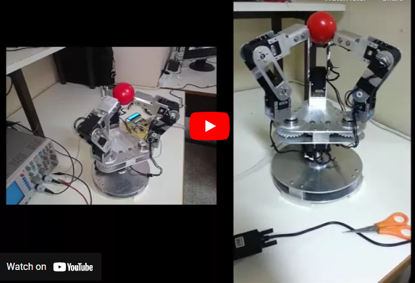

Floaty, The Soaring robot
More infromation are comming in the Future
Glass and Mirror Detection using Neural Networks
My main task as a Robotics and Machine Learning researcher at Sber Robotics Lab was developing real-time algorithms for safe indoor robots' navigation.
One project was to develop neural networks that are capable of detecting glass and Mirrors in real-time (Which are very hard to detect using traditional sensors)
Collective Exploring Using a Swarm of Quad-copters
My master's degree project was "Collective Exploring Using a Swarm of Quad-copters".
The main goal of the project was to achieve Collaborative Safe Exploration of new environments using a swarm of quadcopters.
During working on this project I worked on the following subtasks
- Developed a collision avoidance algorithm and published a paper about this algorithm.
- Developed an improvement for the path planning RRT algorithm for improved performance in large complicated environments. I also published a paper about this algorithm (More details on the Research page)
- Applied a Machine Learning model to control the quadcopters.
- Developed an algorithm for dividing the exploration space between the quadcopters.
- Applied SLAM algorithm for all quadcopters.
- Developed an algorithm for merging maps from different quadcopters to get the final map.
Note: This project was planned to be applied and tested on real quadcopters, but due to the COVID-19 pandemic it was only performed and tested in a simulator.

Designing and Building
a Quadcopter
My fifth-year project was building a quadcopter, in which I fully designed the frame of the quadcopter and 3D printed it. The main controller of the quadcopter was a beaglebone black controller.
In addition, I built a 3-DoF testing platform for testing the controllers.
3-Finger Adaptive
Robot Gripper

During my bachelor's degree at HIAST university (
Higher Institute for Applied Sciences and Technology) I have completed two academic projects, the first of which is my fourth-year project "3-Finger Adaptive Robot Gripper".
In this project, I fully designed the gripper and manufactured the parts in the university's workshop. I also designed the electrical circuit that controls the gripper. Using C# I created a user interface that includes all functionalities of the gripper such as
(controlling individual motors (position, speed), controlling the shape of the gripper (freestyle, or choose from multiple predefined shapes), etc.)
I added visual sensing using a camera which was able of estimating the dimensions of objects (and decide the best grip to catch each object)
I also built a glove for imitating the movement of a human hand.
The project's video on YouTube.
WRO Robots

During my bachelor's degree, I participated in four WRO competitions (Advanced category). In all four, my team was ranked first in the national competitions and was qualified to participate in the world finals.